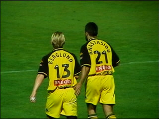

|
Sparta - Roda JC 0-3 20 oktober 2001 |
Het Sparta-logo op het Eneco-stadion.
Supporterscafé "het Schippertje".
Een echte volkskroeg.
Een straat verderop wandel je het buitenland
binnen. Wij zijn zowat de enige bleekgezichten
op een groepje Spartanen na, die net als ons een
van de vele Turkse eettentjes bezoeken.
Het in de tribune geïntegreerde kasteel(tje).
Sjaal blijkt onbrandbaar.
Nygaard met vriendin op de Sparta-tribune.
In de 45e min. ziet Anastasiou de keeper te ver
voor zijn doel staan. Van grote afstand lanceert
hij een wonderschoon doelpunt.

Amicaal tikje voor Frederic.
Sparta krijgt behoorlijk veel kansen maar verprutst
deze categorisch.
Roda verzilverdt daarentegen bijna elke kans.
In de 58e min. scoort Soetaers 0-2
Een van de vele vrijetrappen van Sparta.
Maar opnieuw ligt de bal in het Sparta-doel. In de
82e min. wordt het 0-3 door Anastasiou.
Terwijl het Sparta-publiek massaal wegstroomt
verblijven wij vandaag zo vrolijk.
De irritatie bij de Sparta-supporters leidt tot
opstootjes.
De spelers komen de meegereisde supporters
bedanken.
©KPD